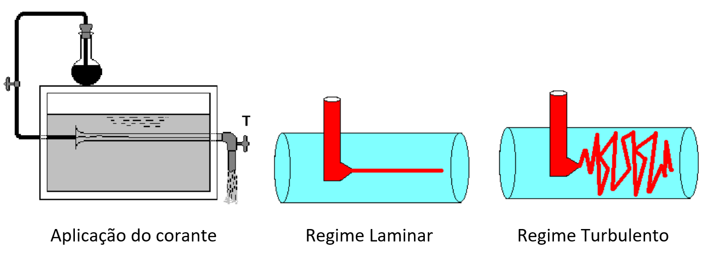

Regimes de escoamento
No século XVIII, os cientistas já notavam que a turbulência podia variar dependendo das condições de escoamento. Osborne Reynolds realizou uma experiência para entender o comportamento dos fluidos em escoamento. Ele utilizou um líquido de contraste (corante) e variou a velocidade de escoamento no conduto. Ele observou que, quando a velocidade era baixa, o líquido escoava de forma ordenada, chamando este estado de "laminar". Quando aumentou a velocidade, o escoamento se tornou desordenado, chamando este estado de "turbulento". Ele também notou que há uma faixa de velocidade onde é difícil definir o regime de escoamento, chamando essa faixa de "zona de transição". Ele identificou duas velocidades críticas: uma para a passagem do regime laminar para o turbulento e outra para a passagem do regime turbulento para o laminar. Ao repetir a experiência com diferentes diâmetros e fluidos, ele descobriu que não só a velocidade, mas também o diâmetro da canalização e o fluido escoante influenciam no regime de escoamento. Assim, ele desenvolveu uma expressão para caracterizar o regime de escoamento. $$Rey = \frac{V . D}{v}$$ Em que:
Para definir o regime de escoamento, basta calcular o número de Reynolds e caracterizá-lo pelos limites: Se $Rey$ é menor do que 2.000, o regime é laminar. Se $Rey$ é maior do que 4.000, o regime é turbulento. Se $Rey$ está entre 2.000 e 4.000, então é zona de transição. 
Experimento de Reynolds.
No escoamento laminar as partículas que compõem o fluido se movimentam em trajetórias bem definidas, constituindo lâminas ou camadas bem individualizadas no meio fluido. Em geral as partículas não se misturam entre si, formando camadas fluidas bem definidas, aproximadamente paralelas. Nesse caso predomina a ação das forças devidas à viscosidade do fluido, em relação às forças de inércia que tendem a quebrar as camadas ou filetes bem definidos. Se aparecem perturbações devido à turbulência elas são rapidamente amortecidas. É o caso típico dos escoamentos de fluidos viscosos em baixas velocidades. Na prática são casos pouco freqüente no domínio da engenharia hidráulica, a não ser em movimentos no solo ou em meios porosos. Nas tubulações ou nos canais ocorre com pouca freqüência. No escoamento turbulento as partículas de fluido movimentam-se em trajetórias irregulares, aleatórias, e de difícil caracterização. O movimento parece ser aleatório e sem um padrão definido, misturando completamente as diversas porções do fluido. No escoamento turbulento predominam as forças de inércia em detrimento das forças viscosas, de forma que as perturbações não são amortizadas e tendem a se propagar no interior do fluido em escoamento. É o caso dos escoamentos de fluidos mais comuns que ocorrem a velocidades mais elevadas. A turbulência provoca o aparecimento de maiores tensões cisalhantes, causando, portanto, maiores perdas de energia que no escoamento laminar.